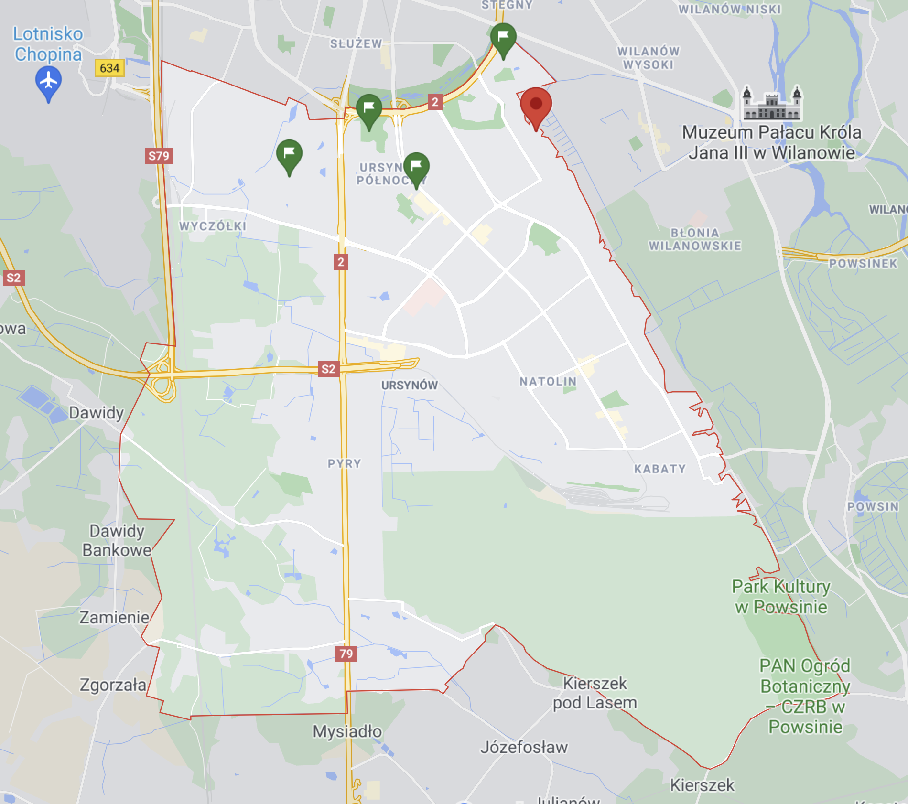
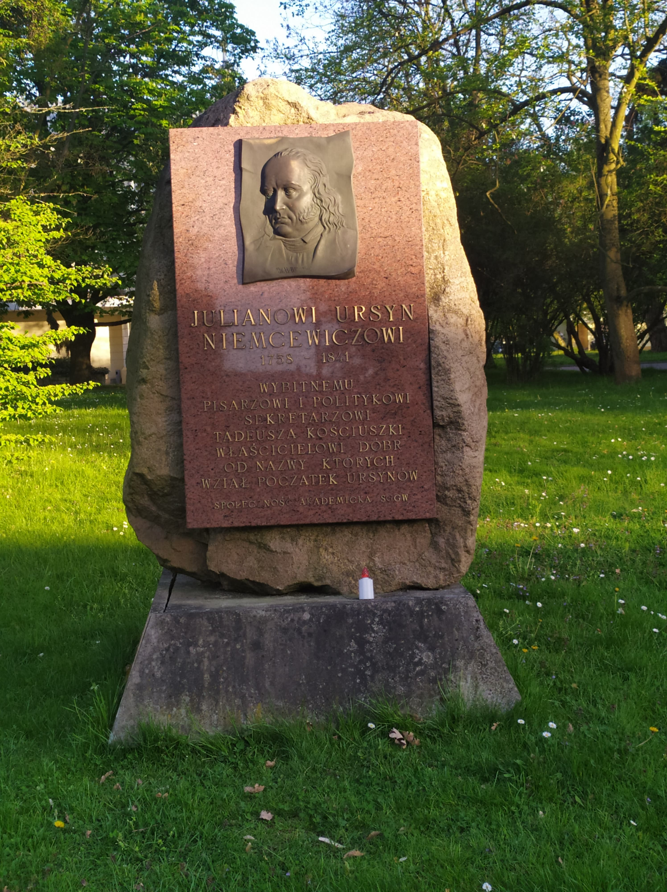
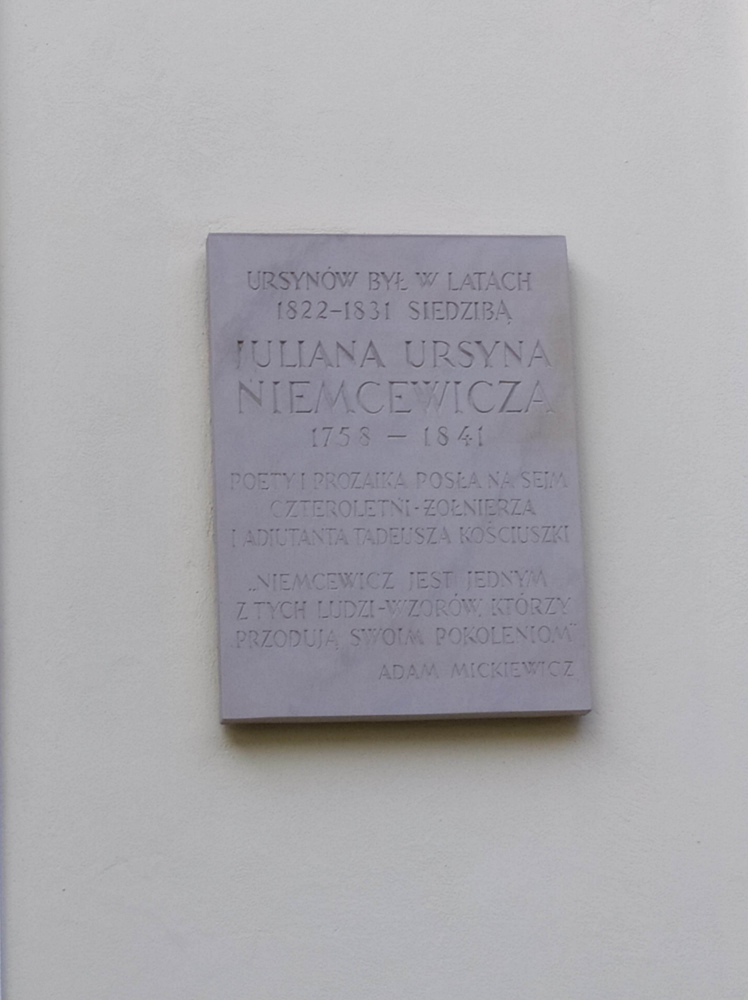
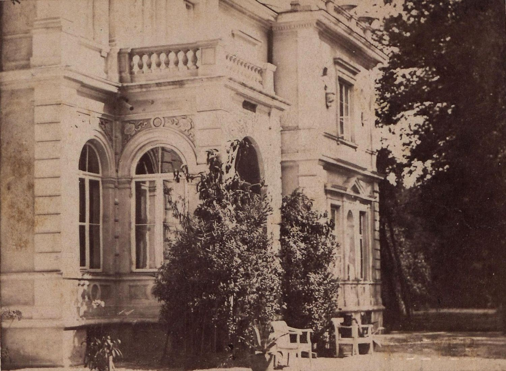
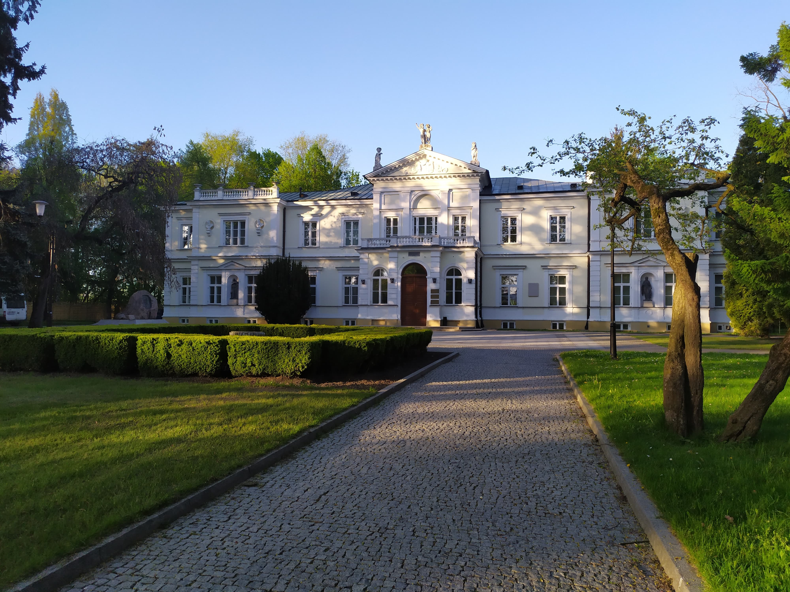
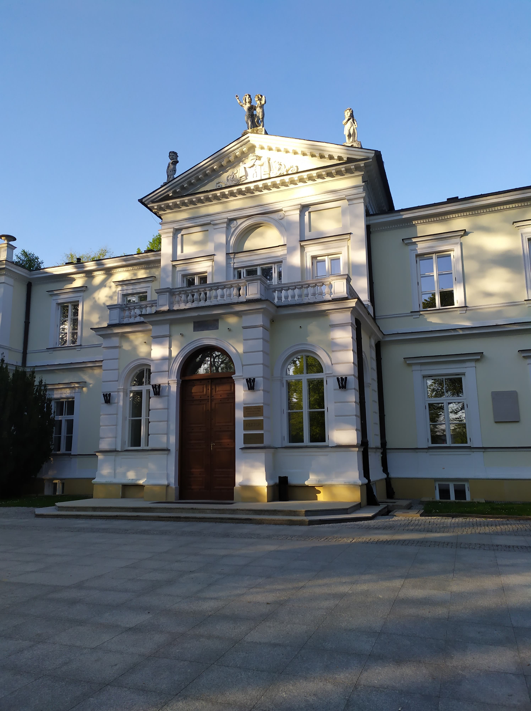
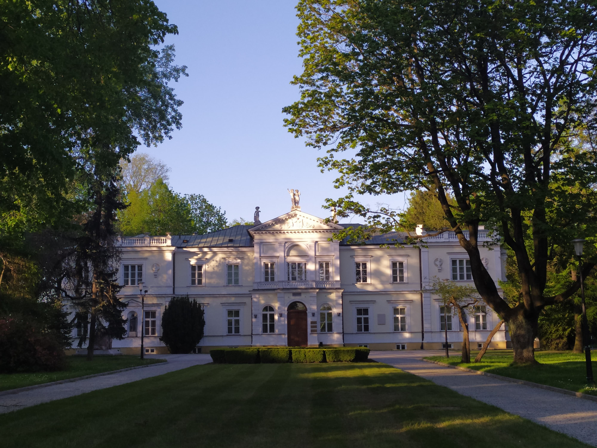

Pałacyk Krasińskich znajduje się na terenie Szkoły Głównej Gospodarstwa Wiejskiego, na granicy Ursynowa i Wilanowa.
Istnieją dwie możliwe historie o początkach pałacyku. Niezależnie od wersji w 1785 roku pałacyk stał się własnością Aleksandry i Stanisława Kostki Potockich. Pałacyk nazywany był wtedy "Rozkoszą". W 1822 roku posiadłość została kupiona przez Juliana Ursyna Niemcewicza, pisarza i polityka, dzięki któremu Ursynów zawdzięcza swoją nazwę. (Jednak mało brakowało, żeby zainspirowany powrotem ze Stanów Zjednoczonych Niemcewicz nie nazwał Ursynowa "Ameryką" lub "Waszyngtonem").
 Po kolejnych kilku zmianach właścicieli w 1851 pałacyk został przejęty przez Krasińskich. Pałacyk został przebudowany według projektu Zygmunta Rospendowskiego. Zostało dodane wtedy piętro.
W 1956 pałac "Rozkosz" otrzymało SGGW. Od tego czasu pałacyk stał się "Pałacykiem Rektorskim" i rezyduje w nim rektorat SGGW.
  